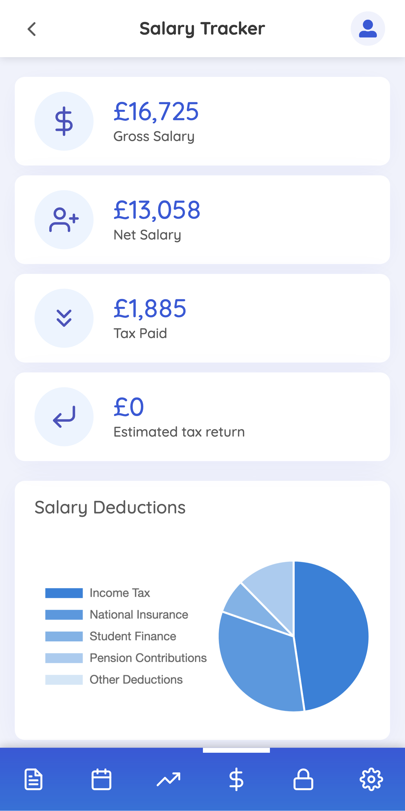
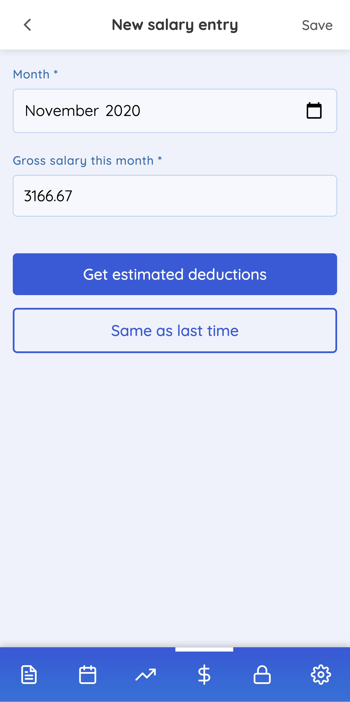

<div class="FeatureMobile-container">
  <div class="FeatureMobile-content">
    <div class="FeatureMobile-images">
      
      
    </div>
    <div class="FeatureMobile-details">
      <h2 class="FeatureMobile-heading">
        Access everything on the go, even when you're offline.
      </h2>
      <p class="FeatureMobile-text">
        Scoop is fully compatible with mobile devices, and you can install the
        app on your phone without even visiting the App Store. Even if you're
        offline, Scoop will retain all of your latest data for you to check up
        on it.
      </p>
    </div>
  </div>
</div>
